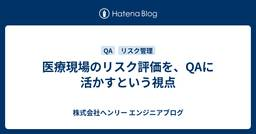

株式会社ヘンリー エンジニアブログ
https://dev.henry.jp/
株式会社ヘンリーのエンジニアが技術情報を発信します
フィード

医療現場のリスク評価を、QAに活かすという視点 1
1
株式会社ヘンリー エンジニアブログ
はじめに ヘンリーでQAとして働くflukaです。前職は、急性期病院の医療事務として18年。入院係としてDPC会計やレセプト業務を担当し、病棟で患者さんや医療スタッフのすぐそばで仕事をしてきました。 そんな私が、いまソフトウェアQAをしています。 医療系のSaaSをQAしていると、「この変更は軽いのか、それとも重いのか」という判断に迷う場面がよくあります。 ヘンリーでもリリース数が増えるなかで、QAのリソースが追いつかなくなる場面が増えてきました。「軽い変更ならエンジニアだけで品質を担保できる仕組みがあれば、QAは本当に必要なところに集中できる」——そう考えて、社内ではQA要否をAIで判定する…
8日前

AIにPull RequestのApprove権限を与えて数ヶ月、どのような効果があったか
株式会社ヘンリー エンジニアブログ
株式会社ヘンリーでソフトウェアエンジニアをしているwarabi(@warabi1062)です。 ヘンリーでは今年の1月から、一部のPull RequestでAIがレビューをする際にApproveを出す権限も与えています。 今回はAIにApproveを出させるようにした経緯や、約半年間の運用をしてみてどのような効果があったかをまとめます。 AI活用による実装速度の向上 今年の1月頃から、ヘンリーではClaudeCodeをより効果的に活用して実装の全自動化に力を入れてきました。その成果の一部として、IssueのIDを渡すだけで設計、実装、PR作成までをClaudeCodeが自動で行ってくれるSki…
1ヶ月前
電子カルテ開発チームの中を紹介
株式会社ヘンリー エンジニアブログ
4月に入社したEMR（電子カルテ）部エンジニアのこん(k0n_karin)です。 この記事では、私が所属するEMR部のRチーム（仮名）の開発の様子を紹介します。入社してから約3ヶ月で感じたチームの動き方や雰囲気、ヘンリーならではのポイントを紹介します。 チーム紹介 Rチームは、PdM1人・エンジニア4人・デザイナー1人・QA2人という構成です。特徴的なのがメンバーのバックグラウンドで、QAの2人はどちらも元医療従事者で、それぞれ医療事務と看護師の経験を持っています。さらにPdMは社内の導入部の出身です。導入部は、病院にHenryを導入する前の説明・調整をしたり、運用フローを整備するチームで、い…
1ヶ月前
「医療 × SRE」、両方初心者の私から見たヘンリーとは
株式会社ヘンリー エンジニアブログ
2026年4月1日からヘンリーに入社しました galoitsu です！ SRE（Site Reliability Engineer）として入社して約1か月が経過し、少しずつ業務にも慣れてきたので入社エントリーを書いていきたいと思います。 これまでの経歴 私は新卒で公共分野に強みを持つSIerに入社し、システムエンジニアとして7年間勤務しました。 もともと 社会貢献度が高い仕事をしたい IT系の仕事がしたい という2つの大きな思いがあったため、それらの掛け合わせで会社を決めました。 より社会貢献を身近に感じられる地元の市役所という選択肢も検討していましたが、今となっては「IT系の仕事がしたい」と…
3ヶ月前
HealthTech Meetup vol.3を開催しました #healthtechmeetup
株式会社ヘンリー エンジニアブログ
ヘンリーでPMをやっているdam(@aki_hiro0038)です。 2026/4/17にfreeeさんのASOBIBAスペースをお借りして、メドレーさん、リンケージさんと合同で「HealthTech Meetup vol.3」を開催しました。 オープニング 最初はいつもの3人の軽快なトークからはじまりました。 お互いの近況報告からはじまり、今回freeeさんの会場をお借りすることになった背景の話など。ラジオ感覚で聞き流せる話から場の空気が温まり、参加者同士の会話も自然と生じるようになっていきました。 「最近肩が痛くてですね....お客さまの中に、理学療法士の方はいらっしゃいませんか？」という…
3ヶ月前
接合面で不確実性を下げ、効率性を上げる ── 私のVPoEとしての仕事
株式会社ヘンリー エンジニアブログ
こんにちは、ヘンリーの山口です。2026年4月にVPoEに就任しました。 年末にVPoEの打診を受けてから就任までの数ヶ月、「VPoEとして自分は何をやる人なのか」を探していました。一般的にイメージされるVPoEの仕事と、自分が実際にやり始めた仕事がどうにも噛み合わなかったからです。ようやく自分なりの答えに辿り着いたので、その結論とそこに至るまでの考え方を書き残しておきます。 違和感：一般的なVPoE像と、私が始めていた仕事 VPoEと聞いて多くの人が想像するのは、たぶんこういう仕事です。 エンジニアの採用戦略を立てる エンジニアのキャリア開発や評価制度を設計する 技術的な方針を決める 開発チ…
3ヶ月前
入社オンボーディング「病院ごっこ」で体感した病院の複雑さ
株式会社ヘンリー エンジニアブログ
4月に入社したてホヤホヤエンジニアのこん（@k0n_karin）です。入社後3日間のオンボーディングで「病院ごっこ」というヘンリーならではのプログラムを体験させていただいたので、病院ごっこで実際に何をしたのか、そしてそれを通して感じた「病院業務の難しさ」と「それを日々回している医療従事者のすごさ」を、入社直後の視点で書いていきます。 本記事がヘンリーや医療ドメインに興味を持つきっかけになれば幸いです。 ヘンリーは何をしているか？ 病院ごっこの前に、まずは簡単にヘンリーの紹介をします。 株式会社ヘンリーは、病院向けの基幹システムとして、電子カルテとレセプトコンピューター（会計・請求システム、通称…
3ヶ月前
Claude Code Marketplaceを使ったSkillのチーム展開とPlugin化の恩恵
株式会社ヘンリー エンジニアブログ
今回はClaude Code Skillを社内に展開する際に選択したClaude Code Marketplaceの導入と、SkillのPlugin化による副次的な恩恵についてお話しします。
3ヶ月前
フルリモートでも“ワンチーム”だった。入社1ヶ月エンジニアが語るヘンリーの魅力
株式会社ヘンリー エンジニアブログ
今年の3月にヘンリーにジョインしました、フロントエンドエンジニアの昆野（@238_k_）です！現在は電子カルテを作るチームでお医者さんや病院スタッフがオーダーをやり取りする機能などを作っています。 本記事では、入社して1か月経った私が感じるヘンリーの魅力をエンジニアの視点から紹介します。フルリモートなのにお互いの理解度が高いこと、質の高いオンボーディングで新しいメンバーから元々いるメンバーまで会社が一つのチームとなって難しい課題を解決していることなど、たくさんの魅力がありました。 自己紹介 私はフロントエンド専門の受託制作会社でキャリアをスタートし、自動車業界のソフトウェアエンジニアを経たのち…
4ヶ月前
HenryにおけるCREとは何か - 信頼性を仕組みで積み上げる部門をつくる
株式会社ヘンリー エンジニアブログ
ヘンリーが2026年4月に新設するCRE部（Customer Reliability Engineering）について、なぜ今この部門が必要なのか、ヘンリーではCREをどう定義しているのかを説明します。問い合わせ対応に閉じず、顧客に近い運用で見つかった課題をプロダクトと運用の両面から再現可能な仕組みに変える。それがヘンリーのCREです。あわせて、立ち上げメンバーとしてどんなエンジニアを募集しているかも紹介します。
4ヶ月前
Claude Codeでドメインエキスパートを育てる ── 解体新書自動生成Pluginの設計と実践
株式会社ヘンリー エンジニアブログ
はじめに 株式会社ヘンリーでソフトウェアエンジニアをしているUGAです。 ヘンリーでは電子カルテ・レセコン一体型のクラウドサービス「Henry」を開発しています。 医療ドメインのプロダクト開発では、コードの複雑さだけでなく、その背景にある医療ドメイン知識の複雑さが大きな壁になります。 この記事では、Claude Codeを使ってコードベースから体系的な技術ドキュメント「解体新書」を自動生成するClaudeCodePluginを開発した話を紹介します。単なるドキュメント自動化の話ではなく、ドメインエキスパートAIをチームで育てるというビジョンに基づいた取り組みです。 きっかけ ヘンリーの開発では…
4ヶ月前
基幹業務システムはどのようにオンプレからクラウドネイティブに変化してきたのか
株式会社ヘンリー エンジニアブログ
株式会社ヘンリー VPoTの戸田です。弊社ではクラウドネイティブ型電子カルテをご提供するうえで、オンプレやクラウドリフト、シングルテナントといったシステム構成とクラウドネイティブ型マルチテナントがどう違うのかを説明する機会が多くあります。都度相手に合わせて内容を調整したご説明をしているのですが、一度基幹業務システムの変化について網羅した説明をすることが今後の役に立つと考え、こちらの記事としてまとめました。 なお筆者が基幹業務システムに関わり始めたのは2000年代後半からで、それよりも古いものには伝聞が入っています。もしお気づきの点があれば @Kengo_TODA までコメントいただくか、はてな…
4ヶ月前
Claude Code Skillsのチーム展開で気づいたSkill管理の課題と対策
株式会社ヘンリー エンジニアブログ
株式会社ヘンリーでソフトウェアエンジニアをしているwarabi(@warabi1062)です。 ヘンリーでは以前から開発にClaude Codeを用いていましたが、最近はSkillの活用などでClaude Codeの性能をもっと引き出そうとする動きが活発になっており、ブログでの発信も増えてきています。 Claude Code を活用した電子カルテの外部連携仕様書メンテナンス自動化の取り組み - 株式会社ヘンリー エンジニアブログ 今回は私が以前に作成したSkillをチームの共有物として管理・展開する際に気付いたSkill管理の課題と対策について話そうと思います。 以前作ったSkillの紹介 起…
4ヶ月前
Claude Code を活用した電子カルテの外部連携仕様書メンテナンス自動化の取り組み
株式会社ヘンリー エンジニアブログ
この記事では、Claude CodeのSkill(Agent Skill)やCIを活用して、コードベースから外部連携の仕様書を自動生成・更新する仕組みを構築した取り組みを紹介します。 はじめに こんにちは！ヘンリーで電子カルテ開発チームでエンジニアをしているわくわく(@wakwak3125 / @wakwakjp) です。 最近社内でのAI活用が進んでいており、 https://dev.henry.jp/entry/claude-code-orchestrator のような便利なSkillのおかげで開発自体の速度がぐんぐん上がっています。 一方で、まだまだ人の手で行われている部分が多いのも事実…
5ヶ月前
Jagu'e'r データ利活用分科会 #32 Meetup 「複数分科会コラボ企画 ― 各業界のデータ利活用事例スペシャル」で登壇しました
株式会社ヘンリー エンジニアブログ
こんにちは、ヘンリーでPMをしているdam(@aki_hiro0038)です。 2026年2月6日、Google Cloud公式ユーザーコミュニティ「Jagu'e'r」のデータ利活用分科会に弊社も参加し、登壇しました。 jaguer.connpass.com きっかけは私が個人的に所属しているデータ分析系のテックコミュニティで「最近噂になっているヘンリーさん、よかったらJagu'e'rで登壇してみませんか」とお声掛けしてもらったことでした。 ちょうど社内でもデータ分析に力を入れようという動きがあり、組織拡大の中でデータ分析業務や基盤構築を専任で担うメンバーも採用できたタイミングでした。 そこで…
5ヶ月前
Claude Codeで開発を全自動化する - Orchestrator型Skillの設計と実践
株式会社ヘンリー エンジニアブログ
株式会社ヘンリーでソフトウェアエンジニアをしているwarabi(@warabi1062)です。 ヘンリーは医療業界向けのプロダクトを開発しており、開発メンバーにも難解なドメイン知識が求められます。そのため普段からドメインの理解や深堀りに時間をかけたいところですが、実際は開発業務も進めなければならないため、時間の使い方に悩んでいました。 この課題に向き合うために、普段開発で使っているClaude Code（Anthropic社が提供するCLIベースのAIコーディングアシスタント）をもっとうまく活用し、実装にかける時間を減らして学習に充てる時間を増やせないかと考えました。 それまでのClaudeC…
5ヶ月前
SRE Kaigi 2026 で推しのインフラツールについて聞いてみた
株式会社ヘンリー エンジニアブログ
株式会社ヘンリーで SRE をやっている id:nabeop です。 ヘンリーでは SRE Kaigi 2026 でゴールドスポンサーとしてスポンサーブースを出していました。 当日のヘンリーブースの様子 当日は朝からブースにたくさんの方に足を運んでいただき、いろいろなお話ができてとても刺激的な1日を過ごせました。また、SRE Kaigi 2026 の運営スタッフの皆様、素晴らしいカンファレンスをありがとうございました。 今回のヘンリーブースでは会話のきっかけとして、「あなたの推しインフラツールを教えてください!!」というアンケートをしてみました。実はこのアンケートは会期前に社内でも実施していた…
6ヶ月前
メドレー、カミナシの皆さんとヘンリーで現場PM勉強会を開催しました
株式会社ヘンリー エンジニアブログ
こんにちは、ヘンリーでPMをしているdam(@aki_hiro0038)です。 2026/1/20にメドレーさんの六本木オフィスをお借りして、3社合同のPM勉強会を開催しました。 本イベントは社外告知しておらず、クローズドな開催となります。 きっかけは昨年のpmconf 2025の懇親会にて、私が「勉強会やりませんか！」と声を掛けたら、即答で「やりましょう！」とメドレーの田所さん(@ytadokorokoro)、カミナシの吉岡さん(@oriori440)がお返事くださったことでした。 3社ともVertical SaaSのプロダクト開発を行っており、顧客現場に深く入り込むことを重視する文化を持ち…
6ヶ月前
RSGT2026にゴールドスポンサーとして初参加しました
株式会社ヘンリー エンジニアブログ
はじめまして、株式会社ヘンリーでPdM・DE（ドメインエキスパート）・スクラムマスターを担当しているowataです。 2026年1月に開催された RSGT2026 に、株式会社ヘンリーとして ゴールドスポンサー＋ブース展示＋セッション登壇 という形で参加しました。 今回弊社は、PdM・DE・エンジニアと幅広い職種で参加しました。 本記事では、 なぜこのブース展示を企画したのか 実際にどんな体験を提供したのか 参加・登壇して何を得たのか を振り返ります。 なぜ「体験型ブース」をやろうと思ったのか 今回のブース展示のコンセプトは、かなりシンプルです。 Help!! ― このプロジェクトの課題、どう…
6ヶ月前
株式会社ヘンリー Advent Calendar 2025 の感想
株式会社ヘンリー エンジニアブログ
株式会社ヘンリーで SRE をしつつ、技術広報的なこともしている id:nabeop です。 2025年も会社でアドベントカレンダーを企画しました。2024年までは1トラックでの開催でしたが、2025年は2トラックでの開催をして多くのメンバーに参加してもらえるようにしました。
7ヶ月前
入社半年、はじめての医療ドメイン理解を振り返る
株式会社ヘンリー エンジニアブログ
【これはHenryアドベントカレンダー 2025 シリーズ 1 における22日目の投稿です。昨日の記事は俺たちの成長は止まらない｜Sugimura Masashiでした。】 はじめまして、6月にヘンリーに入社したエンジニアのichienです。初めてブログを書くので、半年遅れの入社エントリーになります。 私はこれまで地図や会計プロダクトでの経験を経て、今回、新しく医療ドメインにチャレンジしています。開発では主に医事（医療事務）会計領域を担当しています。 入社して半年、過去の学習経験を活かしながら医療ドメインのキャッチアップに取り組んでいますが、自分なりに理解するまでに時間がかかることが多く、試行…
7ヶ月前
みんなが考える難しさはどこにある? アーキテクチャ Conference 2025 のアンケート結果発表
株式会社ヘンリー エンジニアブログ
ヘンリーで SRE をやっている id:nabeop です。 この記事は株式会社ヘンリー - Qiita Advent Calendar 2025 シリーズ2の10日目の記事です。 ヘンリーは2025年11月20日と21日に開催されたアーキテクチャ Conference 2025 で Gold スポンサーとしてスポンサーブースを出展しました。 ヘンリーブースの様子 会期中はたくさんの方にヘンリーブースに足を運んでいただき、ありがとうございました。ブースでは「アーキテクチャ」をキーワードに2つのアンケートを実施していました。 サービスは分ける?まとめる? どの業界が一番設計しにくい? 今回はそれ…
7ヶ月前
Server-Side Kotlin Night 2025を開催しました！
株式会社ヘンリー エンジニアブログ
2025年11月25日、ヘンリーで「Server-Side Kotlin Night 2025」をKotlin Fest 2025の非公式アフターイベントとして開催しました！ henry.connpass.com 2024年に続き2回目の開催となります。 今回はそのイベントのセッション内容と、当日の様子をご紹介します。 セッション内容 AmperでKotlinのエコシステムを簡単キャッチアップ 登壇者: 一円 真治 (ichien)氏 株式会社ヘンリー speakerdeck.com KotlinConf 2025のOpening keynoteでも扱われ、聞いたことはある人が多くいるもののま…
8ヶ月前
わけのわからないバグに遭遇したときの生き抜き方
株式会社ヘンリー エンジニアブログ
株式会社ヘンリーで医療会計部のエンジニアの一條（GitHub: @rerost , X: @hazumirr）です。 これはHenryアドベントカレンダー 2025 シリーズ 1 における7日目の投稿です。昨日の記事は スタートアップで経営を執行から引き剥がした10ヶ月間 でした。 僕は今まで、 複雑な診療報酬をちょっとずつ理解しながらの開発 インシデント時のコマンダー ロジックが複雑かつ機械学習を入れた検索システムの構築（前職） といったことをしていました。 なので、わけのわからないバグに遭遇する機会は多い方だったと思います。 この経験の中で僕が実践していたことについて書きます。 目次 目次…
8ヶ月前
スタートアップで経営を執行から引き剥がした10ヶ月間
株式会社ヘンリー エンジニアブログ
株式会社ヘンリーでVPoEを務めている戸田（id:eller）と申します。これはHenryアドベントカレンダー 2025 シリーズ 1における6日目の投稿です。昨日の記事は kobayang の デザインシステムライブラリを実装するためのテクニック でした。 本日は弊社で経営と執行を分離するためにどう権限委譲を進めてきたかをご紹介したいと思います。スタートアップのVPoEって何をやってるんだろう、という疑問にお答えできれば幸いです。 目次 目次 解きたい課題 何がブロッカーだったのか 課題を解く10ヶ月 1月: 方針の明確化と障害の分析を行い、戦略を立てる 3月: 医事チームを分割して権限委譲…
8ヶ月前
デザインシステムライブラリを実装するためのテクニック
株式会社ヘンリー エンジニアブログ
株式会社ヘンリーでソフトウェアエンジニアをしている小林（kobayang）です。 最近、社内のデザインシステムライブラリの更新を行った際に、汎用的なコンポーネントの実装について整理したので、その内容について記述します。 おことわり この記事は Henry アドベントカレンダー 5 日目の記事です。 この記事は 電子カルテの開発を支える技術3 ~ モダンな技術で再発明する ~ の、「デザインシステムライブラリを実装する」から「汎用的なコンポーネントを実装するテクニック」の節を切り出した内容になります。 なお、この記事の内容は React 前提になります。 Props の定義 汎用的なコンポーネン…
8ヶ月前
【2025年版】ヘンリーのオンボーディング体制の現在点
株式会社ヘンリー エンジニアブログ
この記事は qiita.com の4日目の記事です。 本記事の目的 入社後のあれこれ オンボーディング お客様との関わり 業務に関して 個人で実践していること ドメインエキスパートとの対話でプロダクトの理解を深める 興味のある MTG に参加してみる DevRel 活動に関わる 一緒に仕事をする仲間を募集しています 本記事の目的 はじめまして、11月にヘンリーにレセコン開発エンジニアとして入社した Masaki Sugimoto(id:msksgm) です。 株式会社ヘンリー エンジニアブログには、複数の入社エントリ（はじめての転職で難易度鬼のレセコン開発に挑戦している、はじめまして nabe…
8ヶ月前
技術広報をすると何がいいのか？ 〜得られる効果とコスパについて〜
株式会社ヘンリー エンジニアブログ
こんにちは、ヘンリー開発者のタケハタです。 普段はエンジニアとしてプロダクトの開発をしつつ、技術広報ギルドという有志の横断組織で、技術広報の活動をしています。 本記事は株式会社ヘンリー Advent Calendar 2025 3日目の記事になります。 昨日はSREの(id:nabeop / @nabeo)によるなぜ AWS 移設をするのかでした。 目次 技術広報の成果は見えづらいとよく言われる 効果として期待できるもの 認知の獲得 コネクションの形成 ブランド力の向上 社内のエンジニアのモチベーションとスキル向上 施策ごとの効果 技術ブログ イベントへのスポンサード、ブース出展 自社イベント…
8ヶ月前
なぜ AWS 移設をするのか
株式会社ヘンリー エンジニアブログ
ヘンリーで SRE をやっている id:nabeop です。 これは株式会社ヘンリー Advent Calendar 2025 (シーズン1) の2日目の記事です。昨日は VPoP (VP of Product) の縣 (id:agtn / @agatan) による事業戦略は技術戦略に影響を与えるが、技術戦略もまた事業戦略に影響を与えるべきでした。 今年の SRE チームの大きなトピックとしてクラウド基盤を Google Cloud から AWS に移設するプロジェクトが進んでいます。プロジェクト自体は去年から始まっており、粛々と進めていたのですが、ある程度の目処が立ってきたので今年の10月に…
8ヶ月前